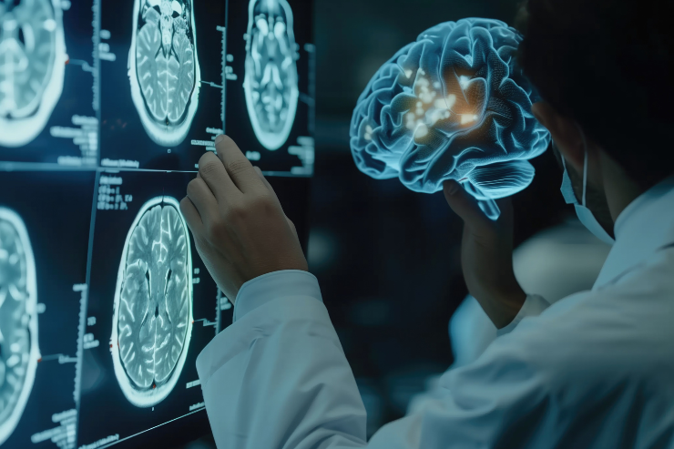
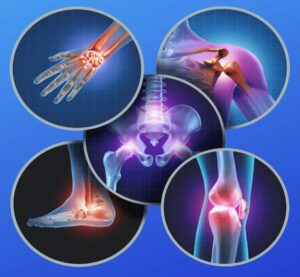
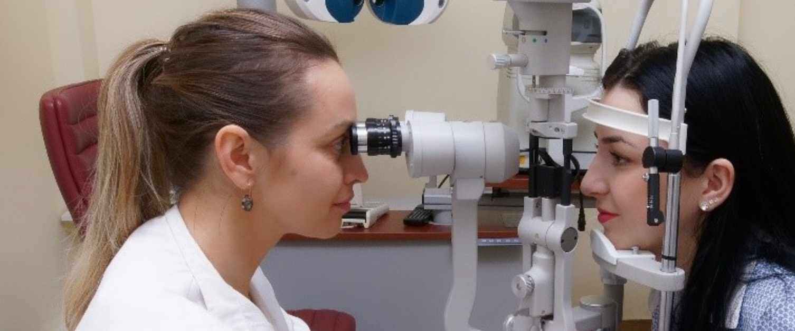
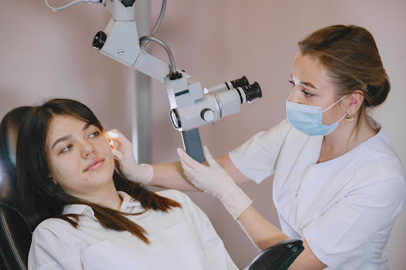

Our Departments
Specialized Medical Services for Better Care
Specialized Medical Services for Better Care
Our hospital offers a wide range of specialized departments equipped with advanced technology and experienced doctors to provide the highest quality healthcare services.Our hospital offers a wide range of specialized medical departments including Cardiology, Orthopedics, Neurology, Pediatrics, Gynecology & Obstetrics, General Medicine, Emergency & Trauma Care, Radiology, Dermatology, and ENT. Each department is equipped with advanced technology and experienced medical professionals to provide accurate diagnosis, effective treatment, and compassionate patient care. From heart and brain disorders to child healthcare, women’s health, skin treatments, emergency services, and diagnostic imaging, we ensure comprehensive and quality healthcare services under one roof with a strong commitment to patient safety and excellence.
General Medicine department provides complete medical care for adults, focusing on diagnosis and management of various health conditions.The General Medicine department (or Internal Medicine) provides comprehensive, non-surgical healthcare for adults, serving as the primary point of contact for diagnosing, treating, and preventing acute and chronic illnesses. Staffed by internists or physicians, this department manages complex, multi-system diseases, and coordinates care for both inpatients and outpatients.
This department treats chronic diseases like diabetes, hypertension, infections, fever, respiratory disorders, and lifestyle-related illnesses. Our experienced physicians ensure accurate diagnosis and long-term care.

Neurology department deals with disorders of the brain, spinal cord, and nervous system.A neurology department specializes in the diagnosis, treatment, and management of disorders affecting the brain, spinal cord, peripheral nerves, and muscles. These departments offer comprehensive care, ranging from emergency stroke treatment to chronic care for epilepsy, dementia, Parkinson's disease, and migraines. Services typically include advanced diagnostics like MRI/CT scans, EEG, and EMG, along with specialized clinics for rehabilitation and, in some cases, neurosurgery and deep brain stimulation.
Treatment includes epilepsy, stroke, migraine, Parkinson’s disease, nerve disorders, and neurological rehabilitation using advanced technology.

Pathology department provides accurate laboratory testing for disease diagnosis.The Department of Pathology is a critical hospital unit focused on diagnosing diseases through the analysis of tissues, blood, and body fluids, acting as the backbone of clinical medicine. It comprises sub-specialties like histopathology, cytopathology, and hematology, providing essential, timely, and reliable reports for patient treatment, research, and education.
Services include blood tests, urine analysis, biopsy examination, histopathology, and preventive health check-up reports.
The Pathology Department plays a critical role in bridging laboratory science with clinical practice by translating diagnostic findings into effective patient management plans.
Cardiology department focuses on heart and blood vessel-related diseases.A cardiology department is a specialized medical unit focused on diagnosing, treating, and preventing cardiovascular diseases, including coronary artery disease, arrhythmias, and heart failure. These departments offer comprehensive care through non-invasive diagnostics (ECG, echo) and interventional procedures (angioplasty, stenting) in dedicated labs. Key teams include cardiologists, specialized nurses, and surgeons who manage acute and chronic heart condition
Treatment includes heart attack care, ECG, angiography, hypertension management, and preventive cardiac programs.

Orthopaedic department treats bone, joint, and muscle disorders. Orthopedics is a medical specialty focused on the musculoskeletal system— bones, joints, muscles, ligaments, tendons, and nerves—using surgical and non-surgical methods to treat injuries (like fractures, sports injuries) and conditions (like arthritis, deformities, infections, tumors) to restore movement and function for all ages.
Orthopedic surgeons diagnose, treat, and prevent disorders affecting the body's structure and mobility, often working with a team of therapists and specialists for comprehensive care, from broken bones to joint replacements.
Services include fracture management, joint replacement, arthritis treatment, sports injury care, and physiotherapy support.
Dermatology department specializes in skin, hair, and nail care.A dermatology department specializes in diagnosing, treating, and preventing diseases of the skin, hair, nails, and mucous membranes, as well as managing cosmetic, aging, and cancerous conditions. These departments offer medical, surgical (dermatosurgery), and cosmetic services, including laser treatments, phototherapy, skin biopsies, and specialized clinics for conditions like psoriasis and vitiligo.
Treatments include acne, allergies, pigmentation, hair loss treatment, cosmetic dermatology, and laser therapy.

Ophthalmology department provides complete eye care services.The Ophthalmology Department specializes in the medical and surgical treatment of eye diseases, providing comprehensive eye exams, vision correction, and advanced procedures like cataract surgery, retinal care, and glaucoma management. These departments often support academic training, research, and community eye care, utilizing advanced technology for diagnostics and treatment.
Services include cataract surgery, glaucoma treatment, retina care, vision correction, and routine eye check-ups.
Nutrition department focuses on healthy diet planning.A nutrition and dietetics department, typically found in hospitals or public health institutions, provides evidence-based medical nutrition therapy, specialized dietary planning, and nutritional counseling to improve patient health, manage diseases, and prevent malnutrition. It bridges clinical care with food service management, offering customized diets for inpatients (including enteral/parenteral nutrition) and outpatients.
Diet plans are customized for diabetes, weight loss, pregnancy, lifestyle diseases, and overall wellness.

ENT department treats ear, nose, and throat conditions.An ENT (Ear, Nose, and Throat) department, or Otolaryngology department, specializes in the diagnostic, medical, and surgical management of disorders related to the ear, nose, throat, and head and neck region. They treat conditions like chronic sinusitis, hearing loss, vertigo, tonsillitis, and voice disorders, providing both routine care and advanced surgical procedures like cochlear implants.
Services include sinus treatment, hearing disorders, tonsil surgery, voice therapy, and allergy management.
Dental department offers comprehensive oral healthcare.Dentistry is the branch of medicine focused on the diagnosis, prevention, and treatment of oral cavity diseases, including teeth, gums, and the jaw. Proper dental care, involving twice-daily brushing and daily flossing, is crucial for preventing cavities, gum disease, and serious systemic health issues, such as heart disease.
Services include dental cleaning, fillings, root canal, orthodontics, cosmetic dentistry, and oral surgery.